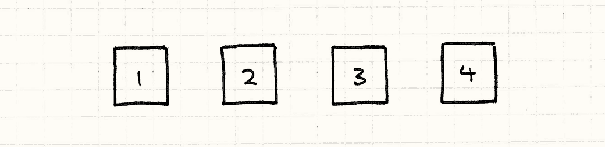
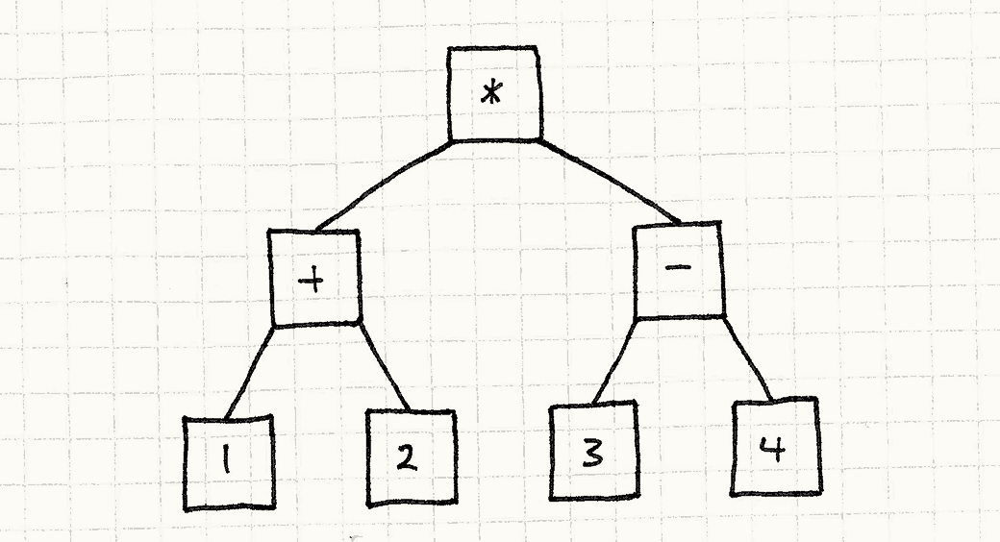
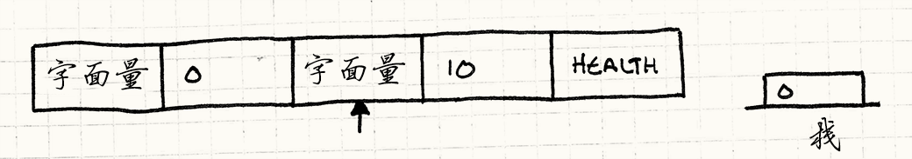
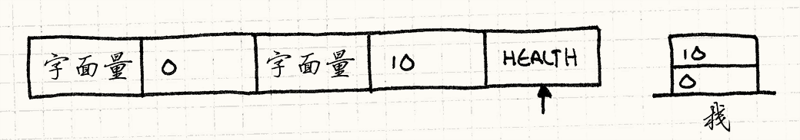
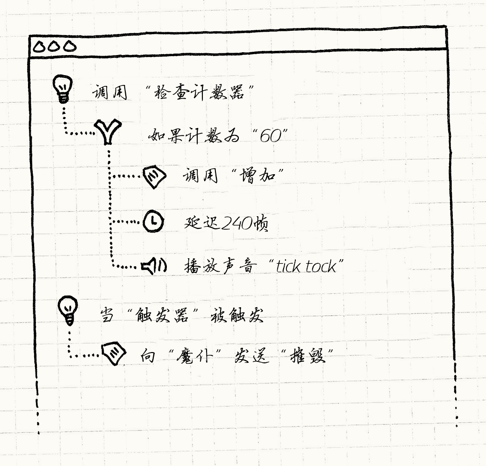

Bytecode
Game Programming PatternsBehavioral Patterns
Intent
意图
Give behavior the flexibility of data by encoding it as instructions for a virtual machine.
将行为编码为虚拟机器上的指令来赋予其数据的灵活性
Motivation
动机
Making games may be fun, but it certainly ain’t easy. Modern games require enormous, complex codebases. Console manufacturers and app marketplace gatekeepers have stringent quality requirements, and a single crash bug can prevent your game from shipping.
制作游戏也许很有趣，但绝不容易。现代的游戏需要庞杂的代码库。游戏机制造商和应用程序市场看门人有着严格的质量要求，一个小小的崩溃漏洞就能阻止你的游戏发售。
At the same time, we’re expected to squeeze every drop of performance out of the platform. Games push hardware like nothing else, and we have to optimize relentlessly just to keep pace with the competition.
与此同时，我们希望榨干平台的最后一点性能。游戏推动硬件发展首屈一指，我们坚持不懈的优化只是为了跟上竞争。
To handle these high stability and performance requirements, we reach for heavyweight languages like C++ that have both low-level expressiveness to make the most of the hardware and rich type systems to prevent or at least corral bugs.
为了控制稳定和性能需求，我们使用重量级的编程语言比如C++，来同时保证容纳大多数硬件的底层和防止漏洞的丰富类型系统。
We pride ourselves on our skill at this, but it has its cost. Being a proficient programmer takes years of dedicated training, after which you must contend with the sheer scale of your codebase. Build times for large games can vary somewhere between “go get a coffee” and “go roast your own beans, hand-grind them, pull an espresso, foam some milk, and practice your latte art in the froth”.
我们对自己的手艺感到自豪，但它有其代价。做一个精通的程序员需要多年的训练，之后你要对抗代码库的规模增长。构建大型游戏的时间可能在“喝杯咖啡”和“烤自己的咖啡店，手磨它们，弄杯espresso，把牛奶打到发泡，在你的拿铁咖啡做一些艺术图案。”
On top of these challenges, games have one more nasty constraint: fun. Players demand a play experience that’s both novel and yet carefully balanced. That requires constant iteration, but if every tweak requires bugging an engineer to muck around in piles of low-level code and then waiting for a glacial recompile, you’ve killed your creative flow.
在这些挑战之上，游戏多了一个讨厌的限制：“乐趣”。玩家需要仔细权衡过的新奇体验。那需要不断的重复，但是如果每一个调整都需要让工程师调整底层的代码然后等待漫长的编译过程，你就毁掉了你的创意流程。
Spell fight!
法术战斗！
Let’s say we’re working on a magic-based fighting game. A pair of wizards square off and fling enchantments at each other until a victor is pronounced. We could define these spells in code, but that means an engineer has to be involved every time one is modified. When a designer wants to tweak a few numbers and get a feel for them, they have to recompile the entire game, reboot it, and get back into a fight.
假设我们在完成一个基于魔法的格斗游戏。一对巫师在广场上飞行互相丢法术，直到胜负已分。我们可以将这些法术都定义在代码中，但这就意味着每当法术修改，工程师就被牵扯进来了。当设计者想要修改一两个数字感觉一下效果，就要重新编译整个工程，重启它，然后重新回到战斗。
Like most games these days, we also need to be able to update the game after it ships, both to fix bugs and to add new content. If all of these spells are hard-coded, then updating them means patching the actual game executable.
像现在的许多游戏一样，我们需要在发售之后更新游戏，修复漏洞或是添加新的内容。如果所有的的法术都是硬编码的，那么修改他们意味着向游戏的运行文件上打补丁。
Let’s take things a bit further and say that we also want to support modding. We want users to be able to create their own spells. If those are in code, that means every modder needs a full compiler toolchain to build the game, and we have to release the sources. Worse, if they have a bug in their spell, it can crash the game on some other player’s machine.
再扯得远一点，我们还想支持MOD。我们想让玩家能创造他们自己的法术。如果这些是在代码中，那么意味着每个MODDER都得拥有编译游戏的整套工具链，而我们得发布那些资源，如果他们在他们的法术上有个漏洞，那么会把其他人的游戏也搞崩溃。
Data > code
数据和代码
It’s pretty clear that our engine’s implementation language isn’t the right fit. We need spells to be safely sandboxed from the core game. We want them to be easy to modify, easy to reload, and physically separate from the rest of the executable.
很明显我们实现引擎的编程语言不是好的选择。我们需要法术放在与核心游戏隔绝的沙箱中。我们想要他们容易的修改，容易的加载，与其他可执行部分隔绝开来。
I don’t know about you, but to me that sounds a lot like data. If we can define our behavior in separate data files that the game engine loads and “executes” in some way, we can achieve all of our goals.
我不知道你是怎么想到，但我听上去这有点像是数据。如果我们能够在分立的数据文件中定义我们的行为，而游戏引擎还能加载并“执行”它们，我们就可以实现所有的目标。
We just need to figure out what “execute” means for data. How do you make some bytes in a file express behavior? There are a few ways to do this. I think it will help you get a picture of this pattern’s strengths and weaknesses if we compare it to another one: the Interpreter pattern.
我们需要指出“执行”对于数据的意义。你如何让文件中的数据指示为行为呢？这里有几种方式。我认为给你一副与编译模式 对比的强弱图会好理解些。
The Interpreter pattern
编译模式
I could write a whole chapter on this pattern, but four other guys already covered that for me. Instead, I’ll cram the briefest of introductions in here. It starts with a language — think programming language — that you want to execute. Say, for example, it supports arithmetic expressions like this:
关于这个模式我就能写一章，但是有四个家伙的工作早就涵盖了我的，相反，我会给一些补习班的简短介绍在这里。他从一种语言开始——想想编程语言——从你想要执行的语言开始。比如，他会支持这样的算术表达式
(1 + 2) * (3 - 4)
Then, you take each piece of that expression, each rule in the language’s grammar, and turn it into an object. The number literals will be objects:
然后，你把每一块的表达式，每一条语言中的规则，都装到一个对象中去。数字都变成对象：

Basically, they’re little wrappers around the raw value. The operators will be objects too, and they’ll have references to their operands. If you take into account the parentheses and precedence, that expression magically turns into a little tree of objects like so:
基本上，他们是原始值的小包装。操作符也是对象，他们拥有他们操作的值的引用。如果你考虑了括号和优先级，那么表达式就会变成这样的小树：

The Interpreter pattern isn’t about creating that tree; it’s about executing it. The way it works is pretty clever. Each object in the tree is an expression or a subexpression. In true object-oriented fashion, we’ll let expressions evaluate themselves.
解释器模式与创建这棵树无关，他是关于执行这棵树。它工作的方式非常聪明。树中的每个对象是表达 或子表达式。用真正的面向对象的方式描述，我们会让表达式自己执行自己。
First, we define a base interface that all expressions implement:
首先，我们定义所有表达式都实现了的基本接口：
class Expression { public: virtual ~Expression() {} virtual double evaluate() = 0; };
Then, we define a class that implements this interface for each kind of expression in our language’s grammar. The simplest one is numbers:
然后，我们定义一个类，为我们语法中的每种表达式实现这个接口。最简单的是数字：
class NumberExpression : public Expression { public: NumberExpression(double value) : value_(value) {} virtual double evaluate() { return value_; } private: double value_; };
A literal number expression simply evaluates to its value. Addition and multiplication are a bit more complex because they contain subexpressions. Before they can evaluate themselves, they need to recursively evaluate their subexpressions. Like so:
一个数字表达式简单的等于它的值。加法和乘法是有点复杂，因为它们包含子表达式。在递归地计算其子表达式之后，才能计算自己的值。像这样：
class AdditionExpression : public Expression { public: AdditionExpression(Expression* left, Expression* right) : left_(left), right_(right) {} virtual double evaluate() { // Evaluate the operands. double left = left_->evaluate(); double right = right_->evaluate(); // Add them. return left + right; } private: Expression* left_; Expression* right_; };
Pretty neat right? Just a couple of simple classes and now we can represent and evaluate arbitrarily complex arithmetic expressions. We just need to create the right objects and wire them up correctly.
整齐漂亮吧？只是一对简单的类，现在我们可以表示和计算任意复杂的算术表达式。我们只需要创建正确的对象，并正确连起来。
It’s a beautiful, simple pattern, but it has some problems. Look up at the illustration. What do you see? Lots of little boxes, and lots of arrows between them. Code is represented as a sprawling fractal tree of tiny objects. That has some unpleasant consequences:
这是一个优美简单的模式，但它有自己的问题。看看插图，你看到了什么？大量的小盒子，以及在他们之间大量的箭头。代码别表示为小物体组成的巨大分形树。这有一些令人不快的后果：
-
Loading it from disk requires instantiating and wiring up tons of these small objects.
-
从磁盘上加载它需要实例化并连接大量这种小对象。
-
Those objects and the pointers between them use a lot of memory. On a 32-bit machine, that little arithmetic expression up there takes up at least 68 bytes, not including padding.
-
这些对象和他们之间的指针会占据大量的内存。在32位机器上，那个小的算术表达式至少占据68字节，还不包括填充的部分。
-
Traversing the pointers into subexpressions is murder on your data cache. Meanwhile, all of those virtual method calls wreak carnage on your instruction cache.
-
遍历到子表达式的指针是对你数据缓存的谋杀。同时所有的虚函数调用是对你指令缓存的屠杀。
Put those together, and what do they spell? S-L-O-W. There’s a reason most programming languages in wide use aren’t based on the Interpreter pattern. It’s just too slow, and it uses up too much memory.
将这些拼到一起，你怎么念？M-A-N。这就是为什么大多数广泛应用的编程语言不基于解释器模式。这太慢了，也太消耗内存了。
Machine code, virtually
机器码，虚拟的
Consider our game. When we run it, the player’s computer doesn’t traverse a bunch of C++ grammar tree structures at runtime. Instead, we compile it ahead of time to machine code, and the CPU runs that. What’s machine code got going for it?
想想我们的游戏。当我们运行时，玩家的电脑在运行时不会遍历一堆C++语法结构树。相反地，我们踢球为其编译成了机器码，CPU基于机器码运行。机器码有什么好处呢？
-
It’s dense. It’s a solid, contiguous blob of binary data, and no bit goes to waste.
-
它是密集的。它是一块坚实连续的二进制数据块，没有一位被浪费了。
-
It’s linear. Instructions are packed together and executed one right after another. No jumping around in memory (unless you’re doing actual control flow, of course).
-
它是线性的。指令被打成一包，一条接一条的执行。没有在内存里到处乱跳（除非你控制代码流这么干）
-
It’s low-level. Each instruction does one relatively minimal thing, and interesting behavior comes from composing them.
-
它是底层的。每一条指令都做一件很小的事，有趣的行为从他们的组织中诞生。
-
It’s fast. As a consequence of all of these (well, and the fact that it’s implemented directly in hardware), machine code runs like the wind.
-
它速度快。在所有以上的要素作用下（当然，还有它是直接在硬件上实现的），机器码跑的跟风一样快。
This sounds swell, but we don’t want actual machine code for our spells. Letting users provide machine code which our game executes is just begging for security problems. What we need is a compromise between the performance of machine code and the safety of the Interpreter pattern.
这听起来很好，但我们不希望为我们的番薯提供真正的机器码。让玩家提供游戏运行时的机器码简直就是在乞求安全问题。我们需要的是机器代码性能和解释器模式的安全性之间的一种妥协方案。
What if instead of loading actual machine code and executing it directly, we defined our own virtual machine code? We’d then write a little emulator for it in our game. It would be similar to machine code — dense, linear, relatively low-level — but would also be handled entirely by our game so we could safely sandbox it.
如果我们不是加载机器码并直接执行它，而是定义我们自己的虚拟机器码？然后，我们会在我们的游戏写一个小模拟器。这将与机器码类似——密集，线性，相对底层——但也由游戏直接掌控，所以我们可以放心地将其放入沙箱。
We’d call our little emulator a virtual machine (or “VM” for short), and the synthetic binary machine code it runs bytecode. It’s got the flexibility and ease of use of defining things in data, but it has better performance than higher-level representations like the Interpreter pattern.
我们将小模拟器称为虚拟机（或简称“VM”），它运行字节码合成二进制机器码。它有数据的灵活性和易用性，但它比高层的解释器模式有更好的性能。
This sounds daunting, though. My goal for the rest of this chapter is to show you that if you keep your feature list pared down, it’s actually pretty approachable. Even if you end up not using this pattern yourself, you’ll at least have a better understanding of Lua and many other languages which are implemented using it.
这听起来有点吓人。这章的其余部分目的是展示，如果把功能列表缩减下来，它实际上是相当通俗易懂。即使你最终没有使用这个模式，你至少对Lua和许多其他语言有一个更好的了解。
The Pattern
模式
An instruction set defines the low-level operations that can be performed. A series of instructions is encoded as a sequence of bytes. A virtual machine executes these instructions one at a time, using a stack for intermediate values. By combining instructions, complex high-level behavior can be defined.
一个指令集定义了可以执行的低层操作。一系列的指令被编码为字节序列。虚拟机使用堆栈中间值一个一个执行这些指令。通过结合指令，复杂的高层行为可以被定义。
When to Use It
何时使用
This is the most complex pattern in this book, and it’s not something to throw into your game lightly. Use it when you have a lot of behavior you need to define and your game’s implementation language isn’t a good fit because:
这是本书中最复杂的模式，它不能轻易的加入游戏中。使用之当需要定义很多行为，而游戏的实现语言因为以下原因不能很好的完成任务时：
-
It’s too low-level, making it tedious or error-prone to program in.
-
它太过于底层，容易制造乏味或者充满错误的程序。
-
Iterating on it takes too long due to slow compile times or other tooling issues.
-
由于缓慢的编译时间或者其他工具的文件需要很久才能迭代。
-
It has too much trust. If you want to ensure the behavior being defined can’t break the game, you need to sandbox it from the rest of the codebase.
-
它肩负了太多信任。如果你想保证行为不会破坏游戏，你需要将其与代码的其他部分隔开。
Of course, that list describes a bunch of your game. Who doesn’t want a faster iteration loop or more safety? However, that doesn’t come for free. Bytecode is slower than native code, so it isn’t a good fit for performance-critical parts of your engine.
当然，该列表描述了一堆你的游戏。谁不希望有一个更快的迭代循环和更多的安全？然而，世上没有免费的午餐。字节码比本地代码慢，所以它不适合引擎的性能关键部分。
Keep in Mind
记住
There’s something seductive about creating your own language or system-within-a-system. I’ll be doing a minimal example here, but in the real world, these things tend to grow like vines.
创建自己的语言或者建立系统中的系统是很有趣的。我在这里做一个小小的演示，但在真实世界，这些东西会像藤蔓一样蔓延。
Every time I see someone define a little language or a scripting system, they say, “Don’t worry, it will be tiny.” Then, inevitably, they add more and more little features until it’s a full-fledged language. Except, unlike some other languages, it grew in an ad-hoc, organic fashion and has all of the architectural elegance of a shanty town.
每当我看到有人定义一个小语言或脚本系统，他们都说，“别担心，它很小。”于是，不可避免地，他们增加更多 小功能，直到完成了一个完整的语言。除了，和其它语言不同，它长成了特设的，绿色的，并拥有棚户区建筑般的优雅。
Of course, there’s nothing wrong with making a full-fledged language. Just make sure you do so deliberately. Otherwise, be very careful to control the scope of what your bytecode can express. Put a short leash on it before it runs away from you.
当然，做一个完整的语言并没有什么错。只是确保你是故意这么做的。否则，小心的控制字节码可以表达的含义。在其失控前为其系上皮带。
You’ll need a front-end
你需要一个前端
Low-level bytecode instructions are great for performance, but a binary bytecode format is not what your users are going to author. One reason we’re moving behavior out of code is so that we can express it at a higher level. If C++ is too low-level, making your users effectively write in assembly language — even one of your own design — isn’t an improvement!
底层的字节码指令有利于性能，但是二进制的字节码格式不是你用户能写的。一个我们将行为移出代码的原因是我们想要在高层表现它。如果C++太过底层，那么让你的用户有效的写汇编——虽然是你的设计——不是一个改进方案！
Much like the Gang of Four’s Interpreter pattern, it’s assumed that you also have some way to generate the bytecode. Usually, users author their behavior in some higher-level format, and a tool translates that to the bytecode that our virtual machine understands. In other words, a compiler.
就像GoF的解释器模式，它假设有一些方法来生成字节码。通常情况下，用户通过顶层格式编写行为，再用工具将其翻译为虚拟机理解的字节码。换言之，一个解释器。
I know, that sounds scary. That’s why I’m mentioning it here. If you don’t have the resources to build an authoring tool, then bytecode isn’t for you. But as we’ll see later, it may not be as bad as you think.
我知道，这听起来很吓人。这就是为什么我在这里提到它。如果你没有资源打造一个创作工具，那么字节码不适合你。但是，以后我们会看到，它可能不像你想象的那样糟。
You’ll miss your debugger
你会想念你的调试器
Programming is hard. We know what we want the machine to do, but we don’t always communicate that correctly — we write bugs. To help find and fix those, we’ve amassed a pile of tools to understand what our code is doing wrong, and how to right it. We have debuggers, static analyzers, decompilers, etc. All of those tools are designed to work with some existing language: either machine code or something higher level.
编程是很难的。我们知道我们想要机器做什么，但我们并不总能正确的传达——我们写出了漏洞。为了帮助查找和解决这些，我们已经积累了一堆工具来了解我们的代码做错什么，以及如何修正。我们有调试器，静态分析器，反编译工具等。所有这些工具都是为现有的语言设计的：无论是机器码还是某些更高层次的东西。
When you define your own bytecode VM, you leave those tools behind. Sure, you can step through the VM in your debugger, but that tells you what the VM itself is doing, and not what the bytecode it’s interpreting is up to. It certainly doesn’t help you map that bytecode back to the high-level form it was compiled from.
当你定义自己的虚拟机字节码，你离开了这些工具。当然，你可以通过调试器进入虚拟机，但它告诉你虚拟机 本身在做什么，而不是字节码被翻译成了什么。它不能把字节码映射回原先的高层次的形式。
If the behavior you’re defining is simple, you can scrape by without too much tooling to help you debug it. But as the scale of your content grows, plan to invest real time into features that help users see what their bytecode is doing. Those features might not ship in your game, but they’ll be critical to ensure that you actually can ship your game.
如果你定义的行为很简单，你可能无需太多工具帮助调试就能勉强坚持下来。但随着内容的规模增长，计划 投入些时间完成一些功能，让用户看到他们的字节码在做什么。这些功能也许不随着你的游戏发售，但 他们至关重要，他们能确保你确实能发售您的游戏。
Sample Code
示例代码
After the previous couple of sections, you might be surprised how straightforward the implementation is. First, we need to craft an instruction set for our VM. Before we start thinking about bytecode and stuff, let’s just think about it like an API.
经历了前面几个章节后，你也许会为实现有多么直接而感到惊讶。首先我们需要为我们的VM设定一套指令集。在我们开始考虑字节码之类的东西前，我们先像思考API一样的思考它。
A magical API
法术的API
If we were defining spells in straight C++ code, what kind of API would we need for that code to call into? What are the basic operations in the game engine that spells are defined in terms of?
如果你直接使用C++代码定义法术，代码需要定义何种API？在游戏引擎中定义的法术的基本行为是什么样的？
Most spells ultimately change one of the stats of a wizard, so we’ll start with a couple for that:
大多数法术最终改变一个巫师的状态，因此我们先从一对这样的代码开始。
void setHealth(int wizard, int amount); void setWisdom(int wizard, int amount); void setAgility(int wizard, int amount);
The first parameter identifies which wizard is affected, say 0 for the
player’s and 1 for their opponent. This way, healing spells can affect the
player’s own wizard, while damaging attacks harm their nemesis. These three
little methods cover a surprisingly wide variety of magical effects.
第一个个参数指定哪个巫师被影响力，0代表玩家而1代表对手。以这种方式，治愈法术可以影响玩家自己的巫师，而伤害法术攻击他的敌人。这三个小方法覆盖了出人意料多的法术影响。
If the spells just silently tweaked stats, the game logic would be fine, but playing it would bore players to tears. Let’s fix that:
如果法术只是默默地调整统计数据，游戏逻辑就已经完成了，但玩这样的游戏会让玩家流泪。让我们修复之：
void playSound(int soundId); void spawnParticles(int particleType);
These don’t affect gameplay, but they crank up the intensity of the gameplay experience. We could add more for camera shake, animation, etc., but this is enough to get us started.
这并不影响游戏，但它们增强了游戏的体验。我们可以增加一些镜头晃动，动画之类的，但这已经足以作为开始的部分了。
A magical instruction set
法术的指令集
Now let’s see how we’d turn this programmatic API into something that can be
controlled from data. Let’s start small and then we’ll work our way up to the
whole shebang. For now, we’ll ditch all of the parameters to these methods.
We’ll say the set___() methods always affect the player’s own wizard and
always max out the stat. Likewise, the FX operations always play a single
hard-coded sound and particle effect.
现在让我们把这种程序化的API转化为可以被数据控制的东西。我们从小处开始，然后我们慢慢拓展到整个部分。现在，我们要抛弃方法的所有参数。我们假设set__()方法影响玩家自己的巫师，总是直接将状态最大化。同样，FX操作一直播放硬编码的声音和粒子效果。
Given that, a spell is just a series of instructions. Each one identifies which operation you want to perform. We can enumerate them:
这样，一个法术就只是一系列指令。每一条都代表了你想要呈现的操作。我们可以列举出来：
enum Instruction { INST_SET_HEALTH = 0x00, INST_SET_WISDOM = 0x01, INST_SET_AGILITY = 0x02, INST_PLAY_SOUND = 0x03, INST_SPAWN_PARTICLES = 0x04 };
To encode a spell in data, we store an array of enum values. We’ve only got
a few different primitives, so the range of enum values easily fits into a byte.
This means the code for a spell is just a list of bytes — ergo
“bytecode”.
将法术编码进数据，我们存储了一数组enum值。我们几个不同的原语，因此enum值的范围可以存储到一个字节中。这就意味着法术的代码就是一系列字节——就是“字节码”。
To execute a single instruction, we see which primitive it is and dispatch to the right API method:
为了执行一条指令，我们看看它的原语是什么，然后调用正确的API方法。
switch (instruction) { case INST_SET_HEALTH: setHealth(0, 100); break; case INST_SET_WISDOM: setWisdom(0, 100); break; case INST_SET_AGILITY: setAgility(0, 100); break; case INST_PLAY_SOUND: playSound(SOUND_BANG); break; case INST_SPAWN_PARTICLES: spawnParticles(PARTICLE_FLAME); break; }
In this way, our interpreter forms the bridge between code world and data world. We can wrap this in a little VM that executes an entire spell like so:
用这种方式，我们的解释器建立了沟通代码世界和数据世界的桥梁。我们可以将一个执行法术的VM实现如下：
class VM { public: void interpret(char bytecode[], int size) { for (int i = 0; i < size; i++) { char instruction = bytecode[i]; switch (instruction) { // Cases for each instruction... } } } };
Type that in and you’ll have written your first virtual machine. Unfortunately, it’s not very flexible. We can’t define a spell that touches the player’s opponent or lowers a stat. We can only play one sound!
输入它，你就写好了你第一个虚拟机。不幸的是，它并不灵活。我们不能设定一个接触对手的法术，也不能减少状态值。我们只能播放一个声音！
To get something that starts to have the expressive feel of an actual language, we need to get parameters in here.
为了有一点真正语言的感觉，我们需要在这里引入参数。
A stack machine
栈式机器
To execute a complex nested expression, you start with the innermost subexpressions. You calculate those, and the results flow outward as arguments to the expressions that contain them until eventually, the whole expression has been evaluated.
要执行复杂的嵌套表达式，得先从最里面的子表达式开始。你计算完里面的，结果向外作为参数流向 包含它们的表达式，直到得出最终结果，整个表达式都算完了。
The Interpreter pattern models this explicitly as a tree of nested objects, but we want the speed of a flat list of instructions. We still need to ensure results from subexpressions flow to the right surrounding expressions. But, since our data is flattened, we’ll have to use the order of the instructions to control that. We’ll do it the same way your CPU does — with a stack.
解释器模式将这一明确的嵌套对象表现为树，但我们需要指令速度达到平面列表的速度。我们仍然需要确保 子表达式的结果流向正确的表达式。 但是由于我们的数据是平面的，我们使用的指令顺序来控制这一点。我们用CPU同样的方式执行——用栈。
class VM { public: VM() : stackSize_(0) {} // Other stuff... private: static const int MAX_STACK = 128; int stackSize_; int stack_[MAX_STACK]; };
The VM maintains an internal stack of values. In our example, the only kinds of
values our instructions work with are numbers, so we can use a simple array
of ints. Whenever a bit of data needs to work its way from one instruction to
another, it gets there through the stack.
虚拟机用内部栈保存值。在我们的例子中，我们的指令交互的值只有一种，那就是数字，所以我们可以使用简单的int数组。每比特数据需要从一条指令到另一条指令，它得通过堆栈。
Like the name implies, values can be pushed onto or popped off of the stack, so let’s add a couple of methods for that:
顾名思义，值可以压入栈或者从栈弹出，所以让我们加一对方法。
class VM { private: void push(int value) { // Check for stack overflow. assert(stackSize_ < MAX_STACK); stack_[stackSize_++] = value; } int pop() { // Make sure the stack isn't empty. assert(stackSize_ > 0); return stack_[--stackSize_]; } // Other stuff... };
When an instruction needs to receive parameters, it pops them off the stack like so:
当一条指令需要接受参数，它将参数从栈弹出，如下所示：
switch (instruction) { case INST_SET_HEALTH: { int amount = pop(); int wizard = pop(); setHealth(wizard, amount); break; } case INST_SET_WISDOM: case INST_SET_AGILITY: // Same as above... case INST_PLAY_SOUND: playSound(pop()); break; case INST_SPAWN_PARTICLES: spawnParticles(pop()); break; }
To get some values onto that stack, we need one more instruction: a literal. It represents a raw integer value. But where does it get its value from? How do we avoid some turtles-all-the-way-down infinite regress here?
为了将一些值存入栈中，我们需要另一条指令：字面量。它代表了一个原始的整数值。但是它的值又是从哪里来的呢？我们怎么样避免这样追根溯源到无穷无尽呢？
The trick is to take advantage of the fact that our instruction stream is a sequence of bytes — we can stuff the number directly in the byte array. We define another instruction type for a number literal like so:
技巧是利用我们的指令路是一系列字节这一事实——我们可以直接将数值存储在字节数组中。如下，我们为数值字面量定义了另一条指令类型：
case INST_LITERAL: { // Read the next byte from the bytecode. int value = bytecode[++i]; push(value); break; }
It reads the next byte in the bytecode stream as a number and pushes it onto the stack.
它读取字节码流中的字节作为数值并将其压入栈。
Let’s string a few of these instructions together and watch the interpreter execute them to get a feel for how the stack works. We start with an empty stack and the interpreter pointing to the first instruction:
让我们串起来其中的几条指令看看解释器如何执行它们，来感受栈如何工作。我们从一个空栈开始，解释器指向第一个指令：
First, it executes the first INST_LITERAL. That reads the next byte from the
bytecode (0) and pushes it onto the stack:
首先，他执行第一条INST_LITERAL。他读取字节码流的下一个字节(0)并压入栈中。

Then, it executes the second INST_LITERAL. That reads the 10 and pushes it:
然后，他执行流第二条INST_LITERAL。读取10然后压入。

Finally, it executes INST_SET_HEALTH. That pops 10 and stores it in
amount, then pops 0 and stores it in wizard. Then, it calls setHealth()
with those parameters.
最后，他执行INST_SET_HEALTH。这弹出10存进amount，弹出0存进wizard。然后它用这两个参数调用setHealth()。
Ta-da! We’ve got a spell that sets the player’s wizard’s health to ten points. Now, we’ve got enough flexibility to define spells that set either wizard’s stats to whatever amounts we want. We can also play different sounds and spawn particles.
完成！我们获得了将玩家巫师血量设为10点的法术。现在我们获得了足够的灵活度来定义修改任一巫师的状态到任意值的法术。我们还可以放不同的声音和粒子效果。
But… this still feels like a data format. We can’t, for example, raise a wizard’s health by half of their wisdom. Our designers want to be able to express rules for spells, not just values.
但是……站感觉还是像数据格式。比如，我们不能将巫师的血量提升他智力的一半。我们的设计者想要有能力为法术设计规则，而不仅仅是数值。
Behavior = composition
行为 = 组合
If we think of our little VM like a programming language, all it supports now is a couple of built-in functions and constant parameters for them. To get bytecode to feel like behavior, what we’re missing is composition.
如果我们认为我们的小虚拟机像一门编程语言，现在支持的只有一些内置函数，以及调用用的参数。为了字节码 感觉像行为，我们需要组合。
Our designers need to be able to create expressions that combine different values in interesting ways. For a simple example, they want spells that modify a stat by a certain amount instead of to a certain amount.
我们的设计师需要能够创建以有趣的方式组合不同的值的表达式。举个简单的例子，他们希望一个法术变化一个数值而不是修改到一个数值。
That requires taking into account a stat’s current value. We have instructions for writing a stat, but we need to add a couple to read stats:
这需要考虑到状态的当前值。我们有指令来修改状态，现在需要添加方法读取状态：
case INST_GET_HEALTH: { int wizard = pop(); push(getHealth(wizard)); break; } case INST_GET_WISDOM: case INST_GET_AGILITY: // You get the idea...
As you can see, these work with the stack in both directions. They pop a parameter to determine which wizard to get the stat for, and then they look up the stat’s value and push that back onto the stack.
正如你所看到的，这些以两种凡是与堆栈交互。他们弹出一个参数来确定获取哪个巫师的状态，然后他们查找状态的值压入堆栈。
This lets us write spells that copy stats around. We could create a spell that set a wizard’s agility to their wisdom or a strange incantation that set one wizard’s health to mirror his opponent’s.
这允许我们写复制状态的法术。我们可以创建一个法术，以巫师的智慧设定敏捷度，或者一个法术让巫师的血量等于对方的。
Better, but still quite limited. Next, we need arithmetic. It’s time our baby VM learned how to add 1 + 1. We’ll add a few more instructions. By now, you’ve probably got the hang of it and can guess how they look. I’ll just show addition:
有改进，但还是有限制。接下来，我们需要算术。现在是时候我们的小VM学习了如何计算1 + 1，我们将添加更多的指令。到现在为止，你可能已经知道如何去做，知道他们大概的模样。我只展示加法：
case INST_ADD: { int b = pop(); int a = pop(); push(a + b); break; }
Like our other instructions, it pops a couple of values, does a bit of work, and then pushes the result back. Up until now, every new instruction gave us an incremental improvement in expressiveness, but we just made a big leap. It isn’t obvious, but we can now handle all sorts of complicated, deeply nested arithmetic expressions.
像我们的其他指令，它弹出一对数值，做一点工作，然后压入结果。直到现在，每一个新指令看起来在逐步改善，但其实我们完成一个大飞跃。这并不显而易见，但我们现在可以处理各种复杂的，深层嵌套的算术表达式。
Let’s walk through a slightly more complex example. Say we want a spell that increases the player’s wizard’s health by the average of their agility and wisdom. In code, that’s:
让我们来看个稍微复杂点的例子。假设我们希望有法术将巫师的血量增加敏捷和智慧的平均值。用代码表示如下：
setHealth(0, getHealth(0) + (getAgility(0) + getWisdom(0)) / 2);
You might think we’d need instructions to handle the explicit grouping that parentheses give you in the expression here, but the stack supports that implicitly. Here’s how you could evaluate this by hand:
你可能会认为我们需要指令来处理括号表达的分组，但栈隐式支持了这一点。你可以手算如下：
- Get the wizard’s current health and remember it.
- Get the wizard’s agility and remember it.
- Do the same for their wisdom.
- Get those last two, add them, and remember the result.
- Divide that by two and remember the result.
- Recall the wizard’s health and add it to that result.
-
Take that result and set the wizard’s health to that value.
-
获取巫师当前的血量并记录结果。
- 获取巫师当前的血量并记录结果。
- 对智慧执行同样的操作。
- 获取最后两个值，加起来并记录结果。
- 除以二并记录结果。
- 回想巫师的血量，并它与这结果加和。
- 取出结果，设置巫师的血量为这一结果。
Do you see all of those “remembers” and “recalls”? Each “remember” corresponds to a push, and the “recalls” are pops. That means we can translate this to bytecode pretty easily. For example, the first line to get the wizard’s current health is:
你看到这些“记录”和“回想”了吗？每个“记录”对应一个压入，“召回”对应弹出。这意味着我们可以很容易转化为字节码。例如，获得向导的当前血量的第一行：
LITERAL 0 GET_HEALTH
This bit of bytecode pushes the wizard’s health onto the stack. If we mechanically translate each line like that, we end up with a chunk of bytecode that evaluates our original expression. To give you a feel for how the instructions compose, I’ve done that below.
这些字节码将巫师的血量压入堆栈。 如果我们机械地将每个行都这样转化，我们最终得到一大块等价于我们原来表达式的字节码。为了让你感觉这些指令如何撰写的，我已经在下面完成了。
To show how the stack changes over time, we’ll walk through a sample execution where the wizard’s current stats are 45 health, 7 agility, and 11 wisdom. Next to each instruction is what the stack looks like after executing it and then a little comment explaining the instruction’s purpose:
为了展示堆栈如何随着时间推移而变化，我们将使用一个样本来执行。巫师目前有45血量，7敏捷，和11智慧。 每条指令的旁边是栈在执行指令之后的模样，再旁边是一些解释了指令意图的注释：
LITERAL 0 [0] # Wizard index LITERAL 0 [0, 0] # Wizard index GET_HEALTH [0, 45] # getHealth() LITERAL 0 [0, 45, 0] # Wizard index GET_AGILITY [0, 45, 7] # getAgility() LITERAL 0 [0, 45, 7, 0] # Wizard index GET_WISDOM [0, 45, 7, 11] # getWisdom() ADD [0, 45, 18] # Add agility and wisdom LITERAL 2 [0, 45, 18, 2] # Divisor DIVIDE [0, 45, 9] # Average agility and wisdom ADD [0, 54] # Add average to current health SET_HEALTH [] # Set health to result
If you watch the stack at each step, you can see how data flows through it
almost like magic. We push 0 for the wizard
index at the beginning, and it just hangs around at the bottom of the stack until
we finally need it for the last SET_HEALTH at the end.
如果你注意力每一步的栈，你可以看到数据如何像魔法一样流动在其中。我们最开始压入0来查找巫师，然后它一直挂在栈的底部，直到最终的SET_HEALTH才用到它。
A virtual machine
一台虚拟机
I could keep going, adding more and more instructions, but this is a good place to stop. As it is, we’ve got a nice little VM that lets us define fairly open-ended behavior using a simple, compact data format. While “bytecode” and “virtual machines” sound intimidating, you can see they’re often as simple as a stack, a loop, and a switch statement.
我可以继续下去，添加越来越多的指令，但是时候适可而止了。如上所述，我们已经有了一个可爱的小虚拟机，可以让我们定义开放式的行为，使用简单，紧凑的数据格式。虽然“字节码”和“虚拟机”的听起来很吓人，你可以看到他们往往简单到了只需栈，循环，和switch语句。
Remember our original goal to have behavior be nicely sandboxed? Now that you’ve seen exactly how the VM is implemented, it’s obvious that we’ve accomplished that. The bytecode can’t do anything malicious or reach out into weird parts of the game engine because we’ve only defined a few instructions that touch the rest of the game.
还记得我们最初让行为呆在沙盒中的目标吗？现在，你已经看到虚拟机是如何实现的，很明显，我们已经完成那个目标。字节码不能伸出恶意的触角到游戏引擎的其他部分，因为我们只定义了接触几个指令可以与剩下的比赛相关的指令。
We control how much memory it uses by how big of a stack we create, and we’re careful to make sure it can’t overflow that. We can even control how much time it uses. In our instruction loop, we can track how many we’ve executed and bail out if it goes over some limit.
我们通过控制我们创造栈的大小来控制内存使用量，我们很小心地确保不会溢出。我们甚至可以控制它使用多少时间。在我们的指令循环里，我们可以追踪有多少指令已经执行，如果它遇到了问题我们也可以帮其摆脱困境。
There’s just one problem left: actually creating the bytecode. So far, we’ve taken bits of pseudocode and compiled them to bytecode by hand. Unless you’ve got a lot of free time, that’s not going to work in practice.
这里还有一个问题：创建字节码。到目前为止，我们使用伪代码再手工编写为字节码。除非你有很多的空闲时间，这种方式并不实用。
Spellcasting tools
施法工具
One of our initial goals was to have a higher-level way to author behavior, but we’ve gone and created something lower-level than C++. It has the runtime performance and safety we want, but absolutely none of the designer-friendly usability.
我们的最初的目标是创造高层方式来控制行为，但是，我们却创造了比C++更底层的东西。它具有我们想要的运行性能和安全性，但绝对没有对设计师友好的可用性。
To fill that gap, we need some tooling. We need a program that lets users define the high-level behavior of a spell and then takes that and generates the appropriate low-level stack machine bytecode.
为了填补这一空白，我们需要一些工具。我们需要一个程序，让用户定义法术的高层次的行为，然后需要的，并生成适当的低层次的栈式机器的字节码。
That probably sounds way harder than making the VM. Many programmers were dragged through a compilers class in college and took away from it nothing but PTSD triggered by the sight of a book with a dragon on the cover or the words “lex” and “yacc”.
这可能听起来比虚拟机更难。许多程序员都在大学参加编译器课程并被龙书或者”lex“和”yacc”引发了PTSD。
In truth, compiling a text-based language isn’t that bad, though it’s a bit too broad of a topic to cram in here. However, you don’t have to do that. What I said we need is a tool — it doesn’t have to be a compiler whose input format is a text file.
事实上，编译一个基于文本的语言并不那么糟，可能有一点宽泛的话题在这里需要补习研究。但是，你不需要那么做。我说，我们需要的是工具——它并不一定是一个编译器，其输入格式是文本文件。
On the contrary, I encourage you to consider building a graphical interface to let users define their behavior, especially if the people using it won’t be highly technical. Writing text that’s free of syntax errors is difficult for people who haven’t spent years getting used to a compiler yelling at them.
相反，我建议你考虑构建一个图形界面让用户定义自己的行为，尤其是在使用它的人没有很强的技术。一个没有花几年时间习惯编译器怒吼的人很难写出没有语法错误文字。
Instead, you can build an app that lets users “script” by clicking and dragging little boxes, pulling down menu items, or whatever else makes sense for the kind of behavior you want them to create.
相反，你可以建立一个应用程序，用户通过单击拖动小盒子，下拉菜单项，或任何你创造的有意义的行为创建“脚本”。

The nice thing about this is that your UI can make it impossible for users to create “invalid” programs. Instead of vomiting error messages on them, you can proactively disable buttons or provide default values to ensure that the thing they’ve created is valid at all points in time.
这样做的好处是，你的UI可以让用户无法创建的“无效的”程序。与其向他们喷洒错误警告，不如主动关闭按钮或提供默认值，以确保他们创造的东西在任何时间点上都有效。
This spares you from designing a grammar and writing a parser for a little language. But, I know, some of you find UI programming equally unpleasant. Well, in that case, I don’t have any good news for you.
这免去了设计语法和编写解析器的工作。但是，我知道，你会发现UI设计同样令人不快。好吧，在这种情况下，我没法提供给你你什么好消息。
Ultimately, this pattern is about expressing behavior in a user-friendly, high-level way. You have to craft the user experience. To execute the behavior efficiently, you then need to translate that into a lower-level form. It is real work, but if you’re up to the challenge, it can pay off.
毕竟，这种模式是关于用对用户友好的高层方式表达行为。你必须设计用户体验。要有效地执行行为，需要转换成一个底层形式。这是必做的工作，但如果你准备好迎接挑战，最终会有所回报。
Design Decisions
设计决策
I tried to keep this chapter as simple as I could, but what we’re really doing is creating a language. That’s a pretty open-ended design space. Exploring it can be tons of fun, so make sure you don’t forget to finish your game.
我尽可能让本章简单，但我们真正做的事情是创造一门语言。有很开放的设计空间，你可以从中获得很多乐趣，所以别忘了完成你的游戏。
How do instructions access the stack?
指令如何访问堆栈？
Bytecode VMs come in two main flavors: stack-based and register-based. In a
stack-based VM, instructions always work from the top of the stack, like in our
sample code. For example, INST_ADD pops two values, adds them, and pushes the
result.
有两种主要类型的字节码虚拟机：基于栈的和基于寄存器的。栈式虚拟机中，指令总是在栈的顶部工作，如同我们的示例代码所示。例如，INST_ADD弹出两个值，将它们相加，并将结果压入。
Register-based VMs still have a stack. The only difference is that instructions
can read their inputs from deeper in the stack. Instead of INST_ADD always popping
its operands, it has two indexes stored in the bytecode that identify where in
the stack to read the operands from.
基于寄存器的虚拟机也有栈。唯一的不同是指令可以从栈的深处读取值。不像INST_ADD始终弹出
其操作数，它在字节码存储两个索引指示了从栈的何处读取操作数。
-
With a stack-based VM:
-
基于栈的虚拟机：
-
Instructions are small. Since each instruction implicitly finds its arguments on top of the stack, you don’t need to encode any data for that. This means each instruction can be pretty small, usually a single byte.
-
指令短小。由于每个指令隐性认定其在栈顶部寻找参数，则不需要为之编码任何数据。这意味着每条指令可能会非常短，一般只需一个字节。
-
Code generation is simpler. When you get around to writing the compiler or tool that outputs bytecode, you’ll find it simpler to generate stack-based bytecode. Since each instruction implicitly works from the top of the stack, you just need to output instructions in the right order to pass parameters between them.
-
代码容易生成。当你需要为生成字节码写编译器或工具时，你会发现它更容易生成基于栈的字节码。由于每个指令隐性在栈顶部工作，你只需要以正确的顺序输出指令就可以在它们之间传递参数。
-
You have more instructions. Each instruction only sees the very top of the stack. This means that to generate code for something like
a = b + c, you need separate instructions to movebandcto the top of the stack, perform the operation, then move the result intoa. -
会生成更多的指令。每条指令只能看到栈的最顶端。这意味着，产生用于像
a = b + c这样的代码，你需要单独的指令将b和c压入栈的顶部，执行操作，再将结果压入a。
-
-
With a register-based VM:
-
基于寄存器的虚拟机：
-
Instructions are larger. Since instructions need arguments for stack offsets, a single instruction needs more bits. For example, an instruction in Lua — probably the most well-known register-based VM — is a full 32-bits. It uses 6 bits for the instruction type, and the rest are arguments.
-
指令较长。由于指令需要参数做栈偏移量，单个指令需要更多的比特。例如，一个Lua指令——可能是最知名的的基于寄存器的虚拟机——使用一个完整的32位。它采用6位做指令类型，其余的是参数。
-
You have fewer instructions. Since each instruction can do more work, you don’t need as many of them. Some say you get a performance improvement since you don’t have to shuffle values around in the stack as much.
-
您有较少的指令。由于每一个指令可以做更多的工作，你并不需要那么多的指令。有人说，性能会得以提升，因为在栈中将值移来移去了。
-
So which should you do? My recommendation is to stick with a stack-based VM. They’re simpler to implement and much simpler to generate code for. Register-based VMs got a reputation for being a bit faster after Lua converted to that style, but it depends deeply on your actual instructions and on lots of other details of your VM.
所以，应该选哪一种？我的建议是坚持使用基于栈的虚拟机。他们更容易实现的，更容易的生成代码。Lua转换为基于寄存器的虚拟机从而变得更快，这为其博得了声誉，但是这强烈依赖于您的实际的指令和大量的虚拟机的其他细节。
What instructions do you have?
你有什么样的指令？
Your instruction set defines the boundaries of what can and cannot be expressed in bytecode, and it also has a big impact on the performance of your VM. Here’s a laundry list of the different kinds of instructions you may want:
你的指令集定义了你在字节码中可以干什么，不能干什么的边界，它对你的虚拟机性能也有很大的影响。这里有一个清单，记录了不同种类的，你可能要的指令：
- External primitives. These are the ones that reach out of the VM into the rest of the game engine and do stuff that the user can see. They control what kinds of real behavior can be expressed in bytecode. Without these, your VM can’t do anything more than burn CPU cycles.
* 外部原语。这是虚拟机可以与游戏引擎其他部分交互并影响玩家看到的部分。他们控制了字节码可以表达的真实行为。如果没有这些，你的虚拟机除了消耗CPU循环以外一无所得。
-
Internal primitives. These manipulate values inside the VM — things like literals, arithmetic, comparison operators, and instructions that juggle the stack around.
-
内部原语这些在虚拟机内操作数值——比如文字，算术，比较操作，以及操纵栈的指令。
-
Control flow. Our example didn’t cover these, but when you want behavior that’s imperative and conditionally executes instructions or loops and executes instructions more than once, you need control flow. In the low-level language of bytecode, they’re surprisingly simple: jumps.
* 控制流。我们的例子并不包括这些，但是当你需要有条件执行或循环执行地行为，你需要控制流。 字节码这样底层的语言，他们出奇的简单：跳转。
In our instruction loop, we had an index to track where we were in the bytecode. All a jump instruction does is modify that variable and change where we're currently executing. In other words, it's a `goto`. You can build all kinds of higher-level control flow using that. 在我们的指令循环中，我们有一个索引来跟踪我们到了字节码的哪里。跳转指令所做的是修改这个索引并改变我们将要执行的。换句话说，这是一个`goto`。您可以制定各种更高级别的控制流。
- Abstraction. If your users start defining a lot of stuff in data, eventually they’ll want to start reusing bits of bytecode instead of having to copy and paste it. You may want something like callable procedures.
抽象。如果你的用户开始在数据中定义很多的东西，最终他们要重用字节码的部分位，而不必复制和粘贴。您可能需要调用过程这样的东西。
In their simplest form, procedures aren't much more complex than a jump. The only difference is that the VM maintains a second *return* stack. When it executes a "call" instruction, it pushes the current instruction index onto the return stack and then jumps to the called bytecode. When it hits a "return", the VM pops the index from the return stack and jumps back to it.
最简单的形式中，过程并不比跳转复杂得多。唯一不同的是，在VM运行后者时，栈会存储第二次返回的位置。当执行“call”指令时，将当前指令索引压入栈中，然后跳转到被调用的字节码。当它到了“return”，虚拟机从堆栈弹出索引，然后调回索引指示的位置。
How are values represented?
数值是如何表示的？
Our sample VM only works with one kind of value, integers. That makes answering this easy —
the stack is just a stack of ints. A more full-featured VM will support
different data types: strings, objects, lists, etc. You’ll have to decide how
those are stored internally.
我们的样本虚拟机只与一种数值打交道：整数。回答这个问题很简单——栈只是一堆int。一个更加完整的虚拟机将支持不同的数据类型：字符串，对象，列表等。你必须决定如何在内部存储这些值。
- A single datatype:
* 单一数据类型：
* *It's simple.* You don't have to worry about tagging, conversions, or
type-checking.
* *简单易用*你不必担心标记，转换，或类型检查。
* *You can't work with different data types.* This is the obvious downside.
Cramming different types into a single representation — think storing
numbers as strings — is asking for pain.
* *无法使用不同的数据类型。*这是明显的缺点。将不同类型成塞进单一的表示方式——想想用存储字符串的方式存储数字——这是找打。
-
A tagged variant:
-
有标记的类型：
This is the common representation for dynamically typed languages. Every value has two pieces. The first is a type tag — an
enum— that identifies what data type is being stored. The rest of the bits are then interpreted appropriately according to that type, like:这是动态类型语言中常见的表示法。所有的值有两部分。第一个是类型标记——一个
enum——标识存储了什么数据类型。这些位的其余部分会被解释为这种类型：enum ValueType { TYPE_INT, TYPE_DOUBLE, TYPE_STRING }; struct Value { ValueType type; union { int intValue; double doubleValue; char* stringValue; }; };
- Values know their type. The nice thing about this representation is that you can check the type of a value at runtime. That’s important for dynamic dispatch and for ensuring that you don’t try to perform operations on types that don’t support it.
* 数值知道其类型。这个表示法的好处是您可以在运行时检查值的类型。这对动态分配是很重要的，可以确保你没有在类型上面执行其不支持的操作。
* *It takes more memory.* Every value has to carry around a few extra bits
with it to identify its type. In something as low-level as a VM, a few
bits here and there add up quickly.
它需要更多的内存。每个值都有随身携带一些额外的位 用它来识别其类型。在一些作为低级别作为VM，几 位在这里和那里迅速增加。
- An untagged union:
* 未标记的union：
This uses a union like the previous form, but it does *not* have a type tag that goes along with it. You have a little blob of bits that could represent more than one type, and it's up to you to ensure you don't misinterpret them. 这像前面一样使用union，但是它*没有*类型标识。你可以将这些位表示为不同的类型，由你确保没有搞错值的类型。 This is how <span name="untyped">statically typed</span> languages represent things in memory. Since the type system ensures at compile time that you aren't misinterpreting values, you don't need to validate it at runtime.
这是静态类型语言在内存中如何表示事物的方式。由于类型系统在编译期保证你没弄错值的类型，你不需要在运行时对其进行验证。
<aside markdown="1" name="untyped"> This is also how *untyped* languages like assembly and Forth store values. Those languages leave it to the *user* to make sure they don't write code that misinterprets a value's type. Not for the faint of heart! </aside> * *It's compact.* You can't get any more efficient than storing just the bits you need for the value itself.
* 结构紧凑。你找不到比只存储你需要的值更加有效率的存储方式。
* *It's fast.* Not having type tags implies you're not spending cycles
checking them at runtime either. This is one of the reasons
statically typed languages tend to be faster than dynamic ones.
* 速度快。没有类型标识意味着你在运行时无需消耗周期检查它们的类型。这是静态类型语言往往比动态类型语言快的原因之一。
* *It's unsafe.* <span name="unsafe">This</span> is the real cost, of course. A bad chunk of bytecode that causes you to misinterpret a value and treat a number like a pointer or vice versa can violate the security of your game or make it crash.
不安全的。这是真正的代价，当然。一块坏的字节码，让你把值误解为指针，会打破你游戏的安全或使其崩溃。
<aside markdown="1" name="unsafe"> If your bytecode was compiled from a statically typed language, you might think you're safe here because the compiler won't generate unsafe bytecode. That may be true, but remember that malicious users may hand-craft evil bytecode without going through your compiler. That's why, for example, the Java Virtual Machine has to do *bytecode verification* when it loads a program. </aside>
- An interface:
* 接口：
The object-oriented solution for a value that maybe be one of several different types is through polymorphism. An interface provides virtual methods for the various type tests and conversions, along the lines of:
多种类型值的面向对象的解决方案是通过多态。接口提供虚拟方法为不同的类型测试和转换，如下：
:::cpp
class Value
{
public:
virtual ~Value() {}
virtual ValueType type() = 0;
virtual int asInt() {
// Can only call this on ints.
assert(false);
return 0;
}
// Other conversion methods...
};
Then you have concrete classes for each specific data type, like:
然后你为每个特定的数据类型设计特定的类，如：
:::cpp
class IntValue : public Value
{
public:
IntValue(int value)
: value_(value)
{}
virtual ValueType type() { return TYPE_INT; }
virtual int asInt() { return value_; }
private:
int value_;
};
* *It's open-ended.* You can define new value types outside of the core VM
as long as they implement the base interface.
* 开放。您可以在虚拟机的核心之外定义新的值类型，只要它们实现了基本接口就行。
* *It's object-oriented.* If you adhere to OOP principles, this does
things the "right" way and uses polymorphic dispatch for type-specific
behavior instead of something like switching on a type tag.
* 面向对象。如果你坚持OOP原则，这是做事情的“正确”的方式，使用多态为特定类型分配行为，而不是标签交换之类的。
* *It's verbose.* You have to define a separate class with all of the
associated ceremonial verbiage for each data type. Note that in the
previous examples, we showed the entire definition of *all* of the value
types. Here, we only cover one!
* 冗长。您必须定义一个单独的类，包含了每个数据类型的相关行为。注意，在前面的例子中，整个定义定义了所有的类型。在这里，我们只覆盖了一个！
* *It's inefficient.* To get polymorphism, you have to go through a
pointer, which means even tiny values like Booleans and numbers get
wrapped in objects that are allocated on the heap. Every time you touch
a value, you have to do a virtual method call.
* 低效。为了多态，你必须使用指针，这意味着即使是短小的值，如布尔和数字，得裹在分配在堆中的对象里。你每使用一个值，你就得做一次虚方法调用。
In something like the core of a virtual machine, small performance hits
like this quickly add up. In fact, this suffers from many of the
problems that caused us to avoid the Interpreter pattern, except now the
problem is in our *values* instead of our *code*.
在虚拟机核心之类的地方，小的性能影响像这样迅速叠加。事实上，这引起了许多我们试图避免的解释器模式中的问题。除了现在的问题不在我们的代码中，而是在我们的值中。
My recommendation is that if you can stick with a single data type, do that. Otherwise, do a tagged union. That’s what almost every language interpreter in the world does.
我的建议是，如果你可以只用单一数据类型，那就这么做。除此以外，使用标记的union。这是世界上几乎每一个语言解释器做的事情。
How is the bytecode generated?
如何生成字节码？
I saved the most important question for last. I’ve walked you through the code to consume and interpret bytecode, but it’s up to you to build something to produce it. The typical solution here is to write a compiler, but it’s not the only option.
我将最重要的问题留到最后。我们已经完成了消耗和解释字节码的代码，但需要你写些制造字节码的工具。典型的解决方案是写一个编译器，但它不是唯一的选择。
- If you define a text-based language:
* 如果你定义一个基于文本的语言：
* *You have to define a syntax.* Both amateur and professional language
designers categorically underestimate how difficult this is to do.
Defining a grammar that makes parsers happy is easy. Defining one that
makes *users* happy is *hard*.
* 你必须定义语法。业余和专业的语言设计师小看这件困难的事情。让解析器快乐很简单，让用户快乐很难。
Syntax design is user interface design, and that process doesn't get
easier when you constrain the user interface to a string of characters.
语法设计是用户界面设计，当你将用户界面限制到字符构成的字符串，这可没把事情变简单。
* *You have to implement a parser.* Despite their reputation, this part is
pretty easy. Either use a parser generator like ANTLR or Bison, or --
like I do — hand-roll a little recursive descent one, and you're good to
go.
* 你必须实现解析器。不管他们的名声，这部分其实非常的简单。无论是使用ANTLR或Bison，还是——像我做的那样——手写递归下降，都可以完成。
* *You have to handle syntax errors.* This is one of the most important
and most difficult parts of the process. When users make syntax and
semantic errors — which they will, constantly — it's your job to guide
them back onto the right path. Giving helpful feedback isn't easy when
all you know is that your parser is sitting on some unexpected
punctuation.
* 您必须处理语法错误。这是最重要和最困难的部分。当用户制造了语法和语义错误——他们总会这么干——这是你的任务引导他们返回到正确的道路。只知道解析器接到意外的符号，给予有用的的反馈并不容易。
* *It will likely turn off non-technical users.* We programmers like text
files. Combined with powerful command-line tools, we think of them as
the LEGO blocks of computing — simple, but easily composable in a million
ways.
* 它可能会对非技术用户关上大门。我们程序员喜欢的文本文件。结合强大的命令行工具，我们把它们当作计算用的乐高积木——简单，易于用百万种方式组合
Most non-programmers don't think of plaintext like that. To them, text
files feel like filling in tax forms for an angry robotic auditor that yells at
them if they forget a single semicolon.
非程序员大部分不这样想文本。对他们来说，文本文件感觉就像为愤怒机器人审核员填写税表，如果他们忘记了一个分号就会痛斥他们。
- If you define a graphical authoring tool:
* 如果你定义了一个图形化创作工具：
* *You have to implement a user interface.* Buttons, clicks, drags, stuff
like that. Some cringe at the idea of this, but I personally love it. If
you go down this route, it's important to treat designing the user
interface as a core part of doing your job well — not just an
unpleasant task to be muddled through.
* 您必须实现用户界面。按钮，点击，拖动，诸如此类。有些人畏惧它，但我喜欢它。如果你沿着这条路走下去，设计用户界面和你的工作的核心部分同等重要——而不是一个硬着头皮完成的乱七八糟的工作。
Every little bit of extra work you do here will make your tool easier
and more pleasant to use, and that directly leads to better content in
your game. If you look behind many of the games you love, you'll often
find the secret was fun authoring tools.
每一点额外的工作都会让你的工具更容易更舒适的使用，并直接导致了你的游戏能有更好的内容。如果你看看很多你喜欢的游戏的内部，你经常会发现制作有趣的创造工具是秘诀之一。
* *You have fewer error cases.* Because the user is building behavior
interactively one step at a time, your application can guide them away
from mistakes as soon as they happen.
* 您有较少的错误情况。由于用户通过交换式一步一步地设计行为，你的应用程序尽快可以引导他们走出错误。
With a text-based language, the tool doesn't see *any* of the user's
content until they throw an entire file at it. That makes it harder to
prevent and handle errors.
使用基于文本的语言，该工具直到用户输入整个文件才能看到用户的内容。这使得它更难预防和处理错误。
* *Portability is harder.* The nice thing about text compilers is that
text files are <span name="lines">universal</span>. A simple compiler
just reads in one file and writes one out. Porting that across operating
systems is trivial.
* *更难实现便携性。*文本编译器的好处是，文本文件是通用的。编译器简单的读入文件并写出。跨平台移植的工作实在微不足道。
<aside markdown="1" name="lines">
Except for line endings. And encodings.
</aside>
When you're building a UI, you have to choose which framework to use,
and many of those are specific to one OS. There are cross-platform UI
toolkits too, but those often get ubiquity at the expense of
familiarity — they feel equally foreign on all of platforms.
当你构建用户界面，你必须选择要使用的架构，其中很多是基于一个操作系统。也有跨平台的用户界面工具包，但他们往往会付出对所有平台适用的代价——他们对所有的平台上同样不适用。
See Also
参见
-
This pattern’s close sister is the Gang of Four’s Interpreter pattern. Both give you a way to express composable behavior in terms of data.
-
这一章节的近亲是GoF的解释器模式。两种方式都能让你用数据组合行为。
In fact, you’ll often end up using both patterns. The tool you use to generate bytecode will have an internal tree of objects that represents the code. This is exactly what the Interpreter pattern expects.
事实上，最终你两种模式都会使用。你用来构造字节码的工具会有内部的对象树。这也是解释器模式所预料的。
In order to compile that to bytecode, you'll recursively walk the tree, just like you do to interpret it with the Interpreter pattern. The *only* difference is that instead of executing a primitive piece of behavior immediately, you output the bytecode instruction to perform that later. 为了编译到字节码，你需要递归回溯整棵树，就像你用解释器模式去解释它一样。*唯一的*不同在于不是立即的执行一段行为，你生成了整个字节码然后再去执行。
-
The Lua programming language is the most widely used scripting language in games. It’s implemented internally as a very compact register-based bytecode VM.
-
Lua是游戏中最被广泛应用的脚本语言。它的内部被实现为一个非常紧凑的，基于寄存器的字节码虚拟机。
-
Kismet is a graphical scripting tool built into UnrealEd, the editor for the Unreal engine.
-
Kismet是个可视化脚本编辑工具，应用于Unreal引擎的编辑器UnrealEd。
-
My own little scripting language, Wren, is a simple stack-based bytecode interpreter.
-
我的脚本语言Wren，是一个简单的，基于栈的字节码解释器。